Saisonstruktur:
Die Formel-1-Saison besteht aus mehreren Grands Prix, die in verschiedenen Ländern stattfinden.
Jeder Grand Prix wird in der Regel nach dem Land benannt, in dem er ausgetragen wird.
Rennorte: Die Grands Prix werden auf verschiedenen Kontinenten ausgetragen, darunter Europa, Asien, Nordamerika und Australien.
Beliebte Strecken sind unter anderem der Circuit de Monaco, der Silverstone Circuit und der Circuit de Spa-Francorchamps.
Alle Rennstrecken des Jahres 2024:
- Sachir/ Bahrain
- Dschidda/ Saudi-Arabien
- Melbourne/ Australien
- Suzuka/ Japan
- Schanghai/ China
- Miami/ USA
- Imola/ Italien
- Monaco/ Monaco
- Montreal/ Kanada
- Barcelona/ Spanien
- Spielberg/ Österreich
- Silverstone/ Großbritannien
- Hungaroring/ Ungarn
- Spa/ Belgien
- Zandvoort/ Niederlande
- Monza/ Italien
- Baku/ Aserbaidschan
- Singapur/ Indonesien
- Austin/ USA
- Mexiko-Stadt/ Mexiko
- Sao Paulo/ Brasilien
- Las Vegas/ USA
- Lusail/ Katar
- Abu Dhabi/ Vereinigten Arabischen Emirate
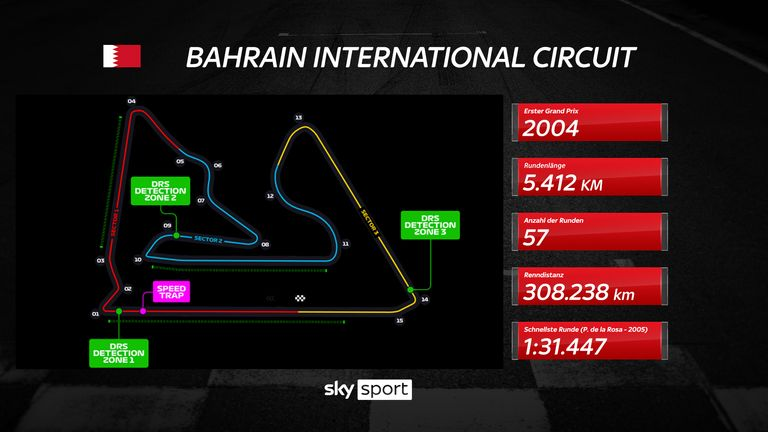
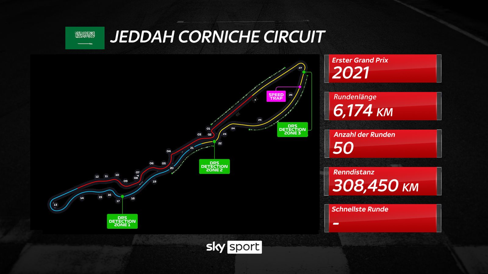
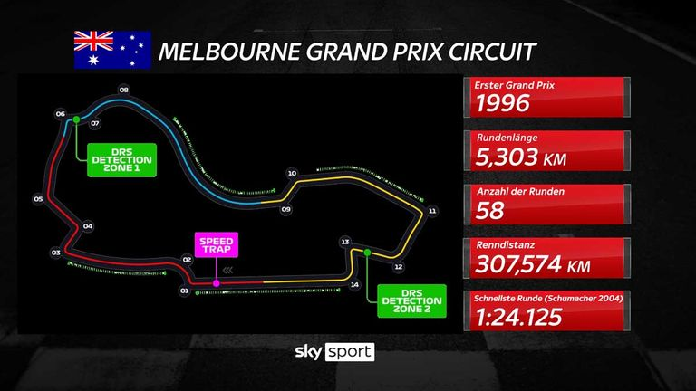
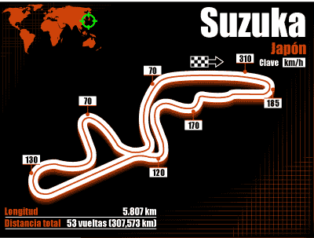
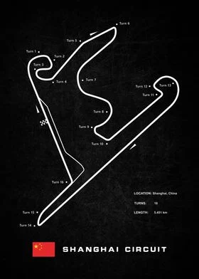
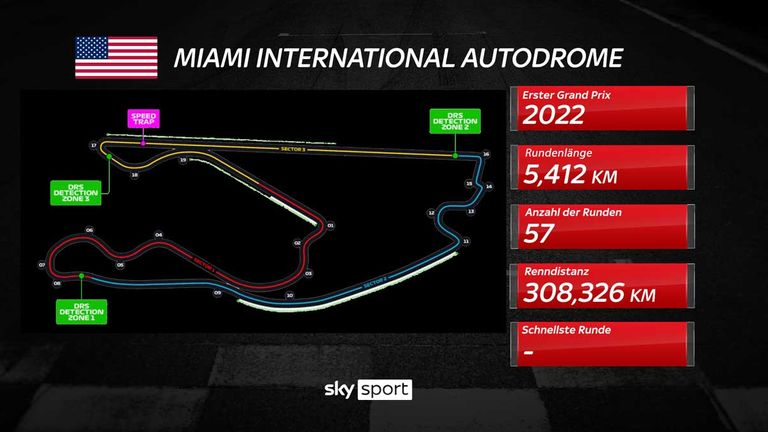
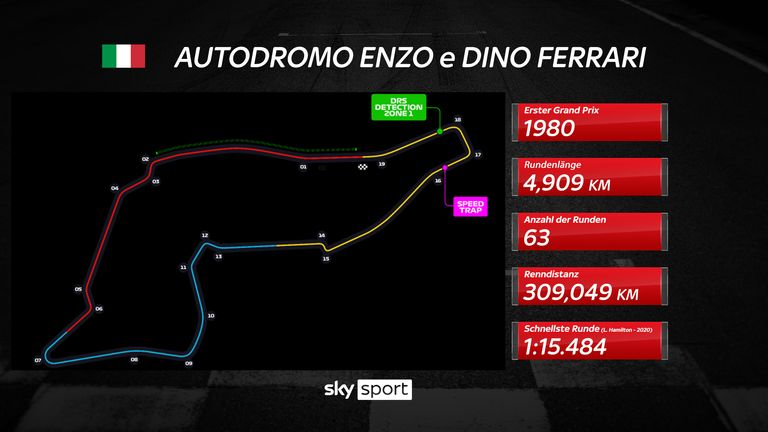
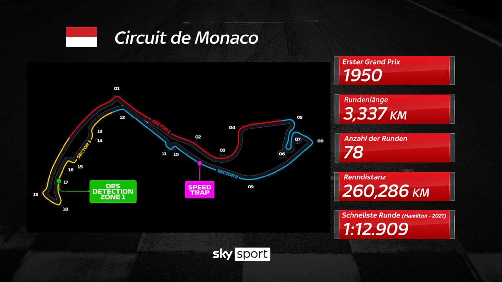
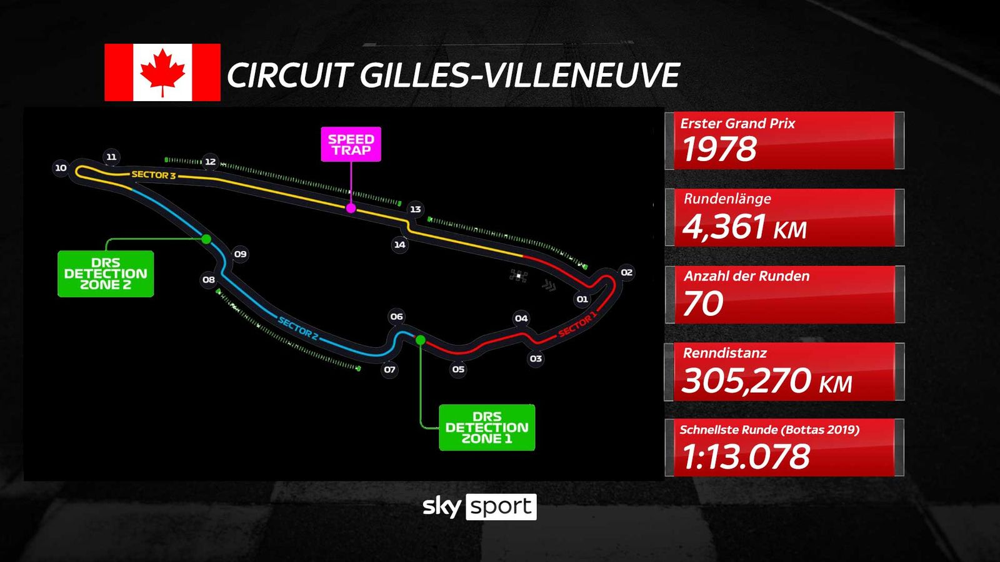
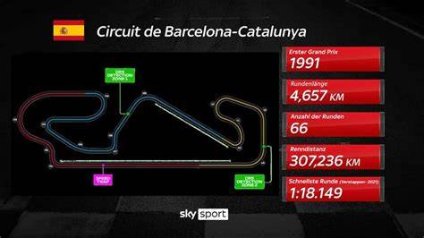
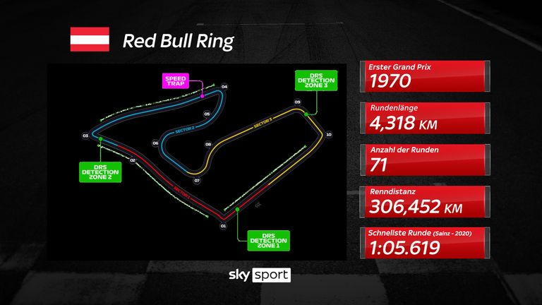
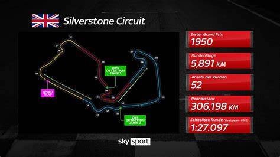
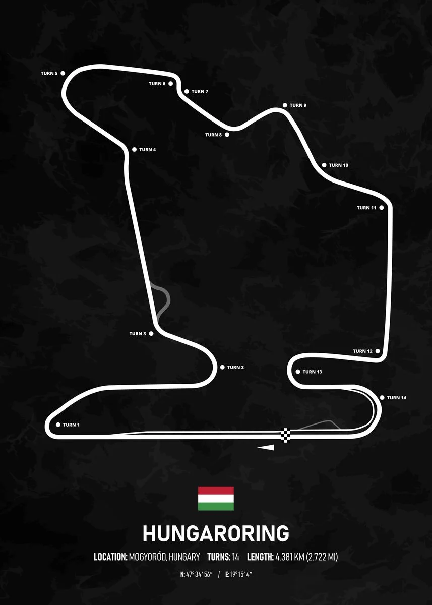
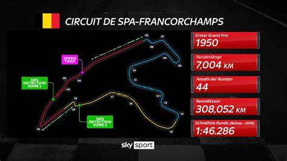
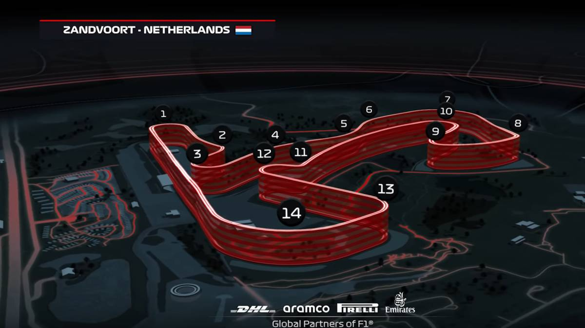
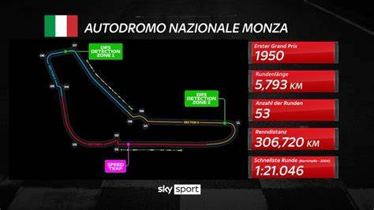
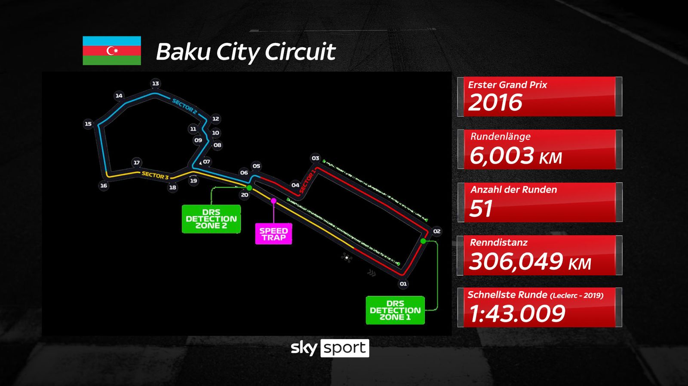
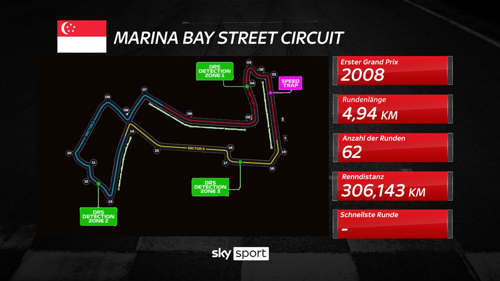
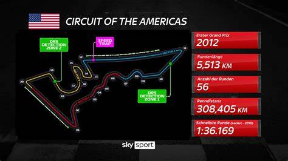
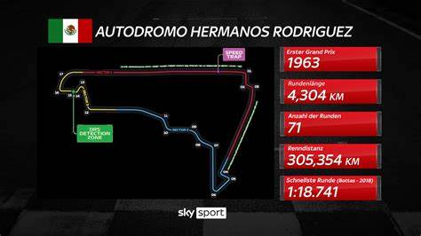
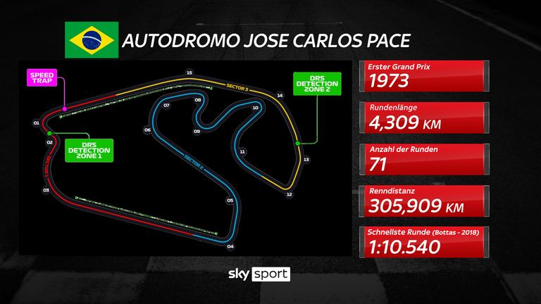
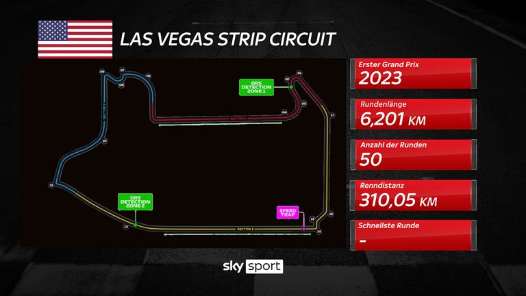
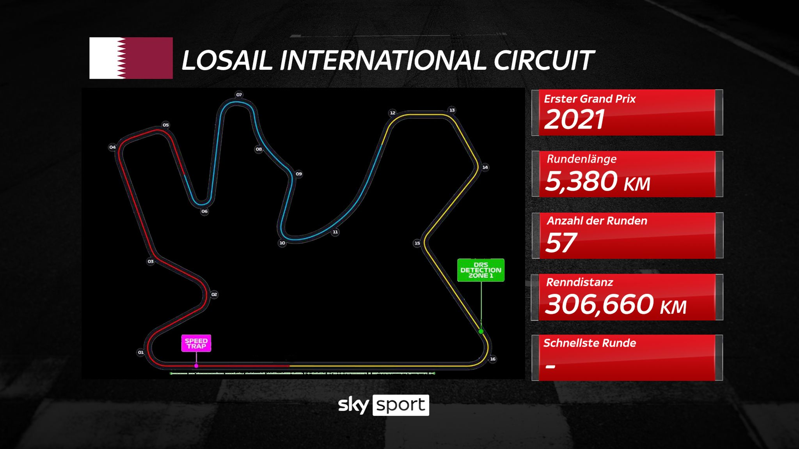
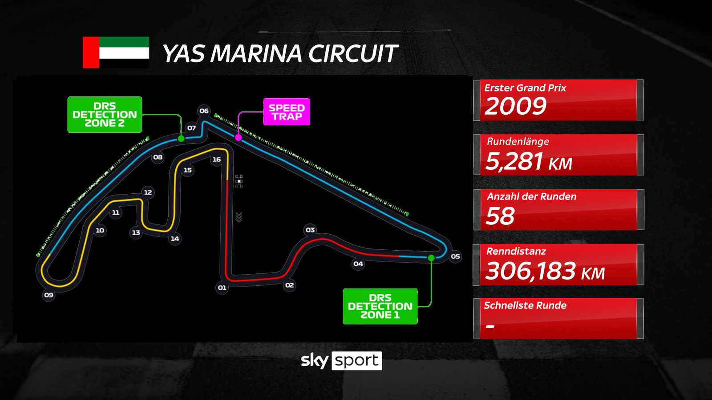